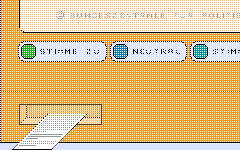

<!--

/* 
   -------------------------------------------------------
   Calculation / Berechnung
     Die Berechnung wird nur nochmals ausgeführt,
     wenn entweder eine Gewichtung  oder eine These
     neu beantwortet worden ist. Ansonsten wird die
     alte Kalkulation genommen.
       $S_nRecalculate = 0 -> neu berechnen
       $S_nRecalculate = 1 -> Berechnung ist noch gültig
   ------------------------------------------------------- 
*/
//-->
<head>
<title>Wahlomat</title>
<link rel=stylesheet type="text/css" href="style.css">
</head>

<body class=adf>
  <script language="javascript"> 
     if (parent.TOPPY!=1){
   	  location.href = "main_app.html";
   	  exit;
   };

  if (parent.S_nRecalculate==1){
    //alert(parent.S_nRecalculate);
    parent.calculate();
    parent.save_auswertung();
    parent.S_nRecalculate=0;
    //alert(parent.S_nRecalculate);
  }
 
   S_nSprache=parent.S_nSprache;
   S_nTheseAktuell=parent.S_nTheseAktuell;
   S_nTheseMax=parent.S_nTheseMax;
   S_aThesen=parent.S_aThesen;
   S_aThemen=parent.S_aThemen;
   S_aThemen=parent.S_aThemen;
   
   CONST_ONLINE_STATISTIK=parent.CONST_ONLINE_STATISTIK;
   WOMT_aThesenBilder=parent.WOMT_aThesenBilder;
   WOMT_aThesen=parent.WOMT_aThesen;
   WOMT_nThesen=parent.WOMT_nThesen;
   WOMT_nTableWidth=parent.WOMT_nTableWidth;
   WOMT_nTexte=parent.WOMT_nTexte;
   WOMT_aParteienLogos=parent.WOMT_aParteienLogos;
   WOMT_aParteienLogos2=parent.WOMT_aParteienLogos2;
   WOMT_aParteien=parent.WOMT_aParteien;
   WOMT_nParteien=parent.WOMT_nParteien;
   WOMT_aBilder=parent.WOMT_aBilder;
   WOMT_aTexte=parent.WOMT_aTexte;
   S_nParteiSelected=parent.S_nParteiSelected;
   S_aParteienDistances=parent.S_aParteienDistances;
   S_aSort=parent.S_aSort;

  bgcolor_0065CE=' bgcolor="#0065CE" ';
  bgcolor_FFFFFF=' bgcolor="#FFFFFF" ';
  bgcolor_000000=' bgcolor="#000000" ';
  bgcolor_00CF00=' bgcolor="#FFFFFF" ';
  bgcolor_D6D3D6=' bgcolor="#D6D3D6" ';
  bgcolor_848284='';
      
 
  b=S_nTheseAktuell+1;
  

function write_3_auswertung(){
rw='';
rw+='<center>';
rw+='<a name="top"></a><table border="0" cellpadding="0" cellspacing="0" width="774" height="54" bgcolor="#F4E7EA">';
rw+='<tr>';
rw+='<td width="260"><a href="http://www.bpb.de" target="_blank"></a></td>';
rw+='<td width="507" align="right"><font class="elf" color="#961734"> <a href="impressum.html" onClick="f1=window.open(\'\',\'faq\',\'scrollbars=1,toolbar=1,menubar=0,location=0,status=0,resizable=0,width=348,height=430,print=yes,left=2,top=2\');if (parseInt(navigator.appVersion)>2) {f1.focus();}" TARGET="faq"><font class="elf" color="#961734">Impressum</font></a></td>';
rw+='<td width="25"></td>';
rw+='</tr>';
rw+='</table>';
rw+='<br>';
rw+='<!-- beginn haupttabelle -->';
rw+='<table border="0" cellpadding="0" cellspacing="0" width="774" height="500" background="images/bg_folg.gif" bgcolor="#EBF0FF">';
rw+='<tr>';
rw+='<td valign="top" width="18"></td>';
rw+='<td valign="top" width="484"><br>';
rw+='<table border="0" cellpadding="0" cellspacing="0" width="484" background="images/fill.gif">';
rw+='<tr>';
rw+='<td valign="top" width="39"></td>';
rw+='<td valign="top" width="339" bgcolor="#ffffff">&nbsp;</td>';
rw+='<td valign="top" width="18" bgcolor="#ffffff"></td>';
rw+='<td valign="top" background="images/schatten_o.gif" width="16" rowspan="2"></td>';
rw+='</tr>';
rw+='<tr>';
rw+='<td valign="top" width="39" bgcolor="#ffffff"></td>';
rw+='<td valign="top" bgcolor="#ffffff">';
rw+='<!-- beginn infokasten -->';
rw+='<table border="0" cellpadding="3" cellspacing="0" align="right">';
rw+='<tr>';
rw+='<td valign="top" width="12"></td>';
rw+='<td></td>';
rw+='<td><b><a href="faq.html" onClick="f1=window.open(\'\',\'faq\',\'scrollbars=1,toolbar=1,menubar=0,location=0,status=0,resizable=0,width=348,height=430,print=yes,left=2,top=2\');if (parseInt(navigator.appVersion)>2) {f1.focus();}" TARGET="faq"><font class="elf">FAQ</font></a></b></td>';
rw+='</tr>';
rw+='<tr>';
rw+='<td valign="top" width="12"></td>';
rw+='<td></td>';
rw+='<td><b><a href="mailto:info@wahl-o-mat.de"><font class="elf">E-Mail</font></a></b></td>';
rw+='</tr>';
rw+='<tr>';
rw+='<td valign="top" width="12"></td>';
rw+='<td></td>';
rw+='<td><b><a href="http://www.wahl-o-mat.de" target="_blank"><font class="elf">Info</font></a></b></td>';
rw+='</tr>';
rw+='<tr>';
rw+='<td valign="top" colspan="3"><font class="elf">&nbsp;</font></td>';
rw+='</tr>';
rw+='</table>';
rw+='<!-- ende infokasten -->';
rw+='<font class="standard" size="2" color="#000000"><b>';
	rw+=WOMT_aTexte["auswertung_titel"][S_nSprache]+'</b><p>';
	rw+=WOMT_aTexte["auswertung_text"][S_nSprache]+' "'+WOMT_aParteien[S_nParteiSelected][S_nSprache][1]+'"<p>';
	if((WOMT_aParteienLogos[S_nParteiSelected][0]!="")
		&&(WOMT_aParteienLogos[S_nParteiSelected][1]>0)
		&&(WOMT_aParteienLogos[S_nParteiSelected][2]>0)){
		rw+='';
	}
rw+='<p>';
rw+=WOMT_aTexte["auswertung_text2"][S_nSprache]+'<br>';
rw+='<!-- beginn ergebnis -->';
rw+='<br clear="all">';
rw+='<table border="1" cellpadding="0" cellspacing="0" width="398" class="ergebnis">';
rw+='<tr bgcolor="#EAF0FE">';
rw+='<td width="140">&nbsp;</td>';
rw+='<td width="118" colspan="2" align="center" class="abstand"><font class="zehn" size="1"><b>';
	rw+=WOMT_aTexte["auswertung_uebereinstimmung"][S_nSprache]+'</b></font></td>';
rw+='<td width="140">&nbsp;</td>';
rw+='</tr>';
rw+='<tr>';
rw+='<td width="140">&nbsp;</td>';
rw+='<td width="59">';
rw+='<table border="0" cellpadding="0" cellspacing="0" width="100%">';
rw+='<tr>';
rw+='<td><font class="zehn" size="1">&nbsp;'+WOMT_aTexte["auswertung_uebereinstimmung_klein"][S_nSprache]+'</font></td>';
rw+='<td align="right"></td>';
rw+='</tr>';
rw+='</table></td>';
rw+='<td width="59"><table border="0" cellpadding="0" cellspacing="0" width="100%">';
rw+='<tr>';
rw+='<td></td>';
rw+='<td align="right"><font class="zehn" size="1">';
	rw+=WOMT_aTexte["auswertung_uebereinstimmung_gross"][S_nSprache]+'&nbsp;</font></td>';
rw+='</tr>';
rw+='</table></td>';
rw+='<td width="140">&nbsp;</td>';
rw+='</tr>';

lFullWidth=59;
for (f=0;f<S_aParteienDistances.length;f++){
	a=S_aSort[f];			   
rw+='<tr>';
rw+='<td width="140" class="abstand"><a href="javascript:parent.change_detailauswertung('+a+')" title="';
	rw+=WOMT_aParteien[a][S_nSprache][0]+'"><font class="standard" size="2" color="#000082">';
	rw+=WOMT_aParteien[a][S_nSprache][1]+'</font></a></td>';
rw+='<td width="59" align="right">';
  	if (S_aParteienDistances[a]<=0.0){
		if (S_aParteienDistances[a]>=-1.0){
			red_width=-Math.floor(S_aParteienDistances[a]*lFullWidth);
			if (red_width==0) red_width=2;
			blank_width=lFullWidth-red_width;
			rw+='';
		}
  	} else {
  	  rw+='&nbsp;';
  	}   
rw+='</td>';
rw+='<td width="59">';
   	if (S_aParteienDistances[a]>=0.0){
  	   if (S_aParteienDistances[a]<=1.0){
  	     green_width=Math.floor(S_aParteienDistances[a]*lFullWidth);
  	     if (green_width==0) green_width=2;
  	     blank_width=lFullWidth-green_width;
   	     rw+='';
  	   }					          	
  	} else {
  	  rw+='&nbsp;';
  	}   
rw+='</td>';
rw+='<td width="140" class="abstand">';
rw+='<a href="javascript:parent.change_detailauswertung('+a+')" title="'+WOMT_aParteien[a][S_nSprache][0]+'"></a></td>';
rw+='</tr>';

}

rw+='</table><br>';
if (CONST_ONLINE_STATISTIK==1){
	rw+=WOMT_aTexte["auswertung_andere_user"][S_nSprache]+'<br><br>';
	rw+='<a href="statistik.html?sprache="'+S_nSprache+'"></a>';
	rw+='<br><br>';
}
rw+='<br></td>';
rw+='<!-- ende ergebnis -->';
rw+='<td valign="top" width="18" bgcolor="#ffffff"></td>';
rw+='</tr>';
rw+='</table>';
rw+='<!-- beginn fuss -->';
rw+='<table border="0" cellpadding="0" cellspacing="0" width="484" bgcolor="#ffffff" background="images/fill.gif">';
rw+='<tr>';
rw+='<td valign="top" rowspan="2"></td>';
rw+='<td valign="top" bgcolor="#ffffff"><a href="javascript:parent.replaceIFrame(2)"></a></td>';
rw+='<td valign="top" rowspan="2"></td>';
rw+='</tr>';
rw+='<tr>';
rw+='<td valign="top"></td>';
rw+='</tr>';
rw+='</table>';
rw+='</td>';
rw+='<!-- ende fuss -->';
rw+='<td valign="top" width="30"></td>';
rw+='<td valign="top" width="240"><br>';
rw+='<!-- parteilogo -->';

if((WOMT_aParteienLogos2[S_nParteiSelected][0]!="")
	&&(WOMT_aParteienLogos2[S_nParteiSelected][1]>0)
	&&(WOMT_aParteienLogos2[S_nParteiSelected][2]>0)){
	rw+='<br>';
} else {
	rw+='<br>';
}

rw+='';
rw+='</td>';
rw+='</tr>';
rw+='</table>';
rw+='</center>';
	return rw;
}

document.writeln(write_3_auswertung());

</script>
</body>
</html>


